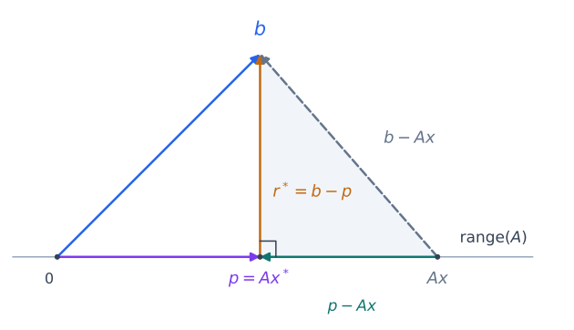

The Method of Normal Equations#
The method of normal equations transforms a linear least-squares problem into a square symmetric system. It connects the geometry of orthogonal projection to the Cholesky solver from the preceding chapter.
The linear least-squares problem is defined as finding the vector \(x\) that minimizes the 2-norm of the residual:
where \(A\in\mathbb{R}^{m\times n}\) and \(b\in\mathbb{R}^m\). The main case here is \(m\ge n\) with full column rank. The geometric derivation also applies when the columns are dependent, so \(x^*\) denotes any minimizer until uniqueness has been established.
Geometric Derivation#
Every fitted vector \(Ax\) lies in the column space \(\operatorname{range}(A)\). Thus least squares asks for the point in this subspace closest to \(b\). From the geometry of orthogonal projections, this point is the orthogonal projection \(p\) of \(b\) onto the column space.
Because \(p\) belongs to the column space, some coefficient vector \(x^*\) satisfies \(Ax^*=p\). The corresponding residual is
The projection separates \(b\) into a fitted part \(p\) in the column space and a residual \(r^*\) perpendicular to it.


Fig. 11 The fitted vector \(p=Ax^*\) is closest to \(b\). For any other fitted vector \(Ax\), the discrepancy \(b-Ax\) splits into the perpendicular residual \(r^*\) and the displacement \(p-Ax\) within the column space. The column space is drawn as a line; the same argument holds for subspaces of any dimension.#
To see why this projection minimizes the residual, compare \(p\) with any other fitted vector \(Ax\). Write
The first term is perpendicular to the column space, while the second lies in it. The Pythagorean theorem therefore gives
The first term is fixed. The second is nonnegative and is zero precisely when \(Ax=p\). Moving away from \(p\) within the column space can only increase the squared distance to \(b\). This proves that \(x^*\) minimizes the residual and that every minimizer has the same fitted vector \(p\).
We can express the perpendicularity condition using the columns \(a_1,\ldots,a_n\) of \(A\). A vector is perpendicular to their span if and only if it is perpendicular to each column:
Substituting \(r^*=b-Ax^*\) gives \(A^T(b-Ax^*)=0\), which yields a square system for the coefficients.
The Normal Equations#
The resulting system is known as the normal equations:
The word normal refers to the residual being perpendicular to the column space. These \(n\) equations characterize all least-squares minimizers: any solution has a perpendicular residual, and the Pythagorean argument then proves it minimizes the distance. They remain valid when \(A\) is rank deficient, although the coefficient vector is then not unique.
Derivation by Minimizing the Quadratic Form#
Minimizing the residual norm is equivalent to minimizing its square. The same equations follow by differentiating this quadratic function.
Proof. Expanding the squared norm gives
The two cross terms combine because \(b^TAx=x^TA^Tb\) is a scalar. Since \(A^TA\) is symmetric, the gradient (the vector of partial derivatives) is
At a minimizer this gradient is zero, giving \(A^TAx^*=A^Tb\). Conversely, a solution of these equations has the perpendicular residual established above, so it is a global minimizer.
Properties of \(A^T A\)#
To choose a solver for the normal equations, we need the structure of \(A^TA\). It is symmetric, since \((A^TA)^T=A^TA\), and positive semidefinite because
If \(A\) has full column rank, then \(Az\ne0\) for every nonzero \(z\), making this expression strictly positive. Thus \(A^TA\) is symmetric positive definite (SPD) and the normal equations have a unique solution \(x^*\). If the columns are dependent, \(A^TA\) is singular. The fitted vector is still unique, but adding any vector in the null space of \(A\) to \(x^*\) gives another minimizer.
For full column rank, the exact solution can be written as
In computation, we solve using Cholesky factorization rather than form the inverse. Its stability guarantees apply to the matrix supplied to the solver; forming \(A^TA\) in floating-point arithmetic introduces a separate source of error.
Algorithm Summary#
For full column rank \(A\), the method has three steps:
Form the Gram matrix: Compute the \(n \times n\) matrix \(C = A^T A\).
Form the right-hand side: Compute the \(n\)-vector \(d = A^T b\).
Solve using Cholesky: Factor \(C=LL^T\), then solve \(Ly=d\) and \(L^Tx^*=y\).
Analysis and Drawbacks#
Computational Cost#
Counting multiplication and addition as separate flops, the leading costs are:
Computing one triangle of \(A^TA\) and copying it to the other takes approximately \(mn^2\) flops. Computing every entry independently would take about \(2mn^2\).
Computing \(A^T b\) takes approximately \(2mn\) flops.
Cholesky factorization takes approximately \(\frac13n^3\) flops; the two triangular solves add \(O(n^2)\).
The total leading cost is \(mn^2+\frac13n^3\), compared with \(2mn^2-\frac23n^3\) for Householder QR. For \(m\gg n\), the normal-equations method uses about half the factorization arithmetic. This saving is the reason to consider it, but it comes with an accuracy risk.
Accuracy Risk: Squaring the Condition Number
For full column rank \(A\), the eigenvalues of \(A^TA\) are \(\sigma_i(A)^2\). Therefore the condition number of the system we form is
Rounding errors in forming \(A^TA\) can be large relative to its smallest eigenvalues. These errors can obscure the directions associated with small singular values of \(A\), so a stable Cholesky solve does not guarantee an accurate solution of the original least-squares problem. If the columns are nearly dependent, the rounded Gram matrix may even lose positive definiteness and Cholesky can fail.
For example, \(\kappa_2(A)=10^6\) gives \(\kappa_2(A^TA)=10^{12}\). This signals a greater risk of losing precision, but does not by itself determine the error in a particular computed solution. The error also depends on \(b\) and the rounding errors in forming and solving the system.
The QR method avoids forming \(A^TA\) and works with a triangular factor having the same singular values as \(A\). It preserves the conditioning of that factorization step, while the original least-squares problem can still be sensitive to perturbations.